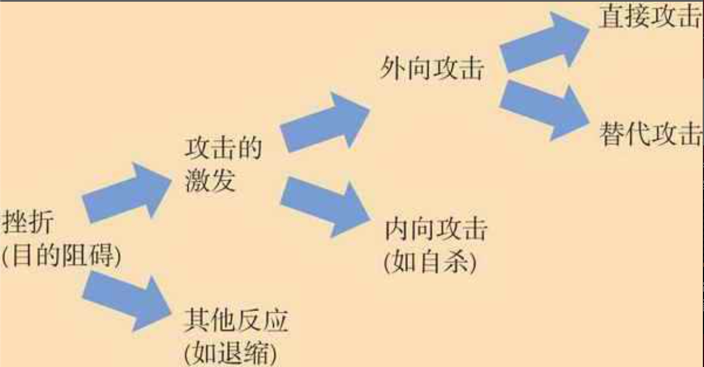

攻击行为的定义与理论
攻击行为：意图伤害他人的身体行为或言语行为。
敌意性攻击行为：愤怒引起，以伤害为目的。
工具性攻击行为：把伤害作为达到其他目的的一种手段。
攻击行为的挫折-攻击理论
挫折（任何阻碍我们实现目标的事物）总会导致某种形式的攻击行为。
我们会克制直接的报复，特别当别人会对这种行为表示反对或进行惩罚时，我们会把我们的敌意转移到一些安全的目标上。
当新的目标与挫折源有相似之处，并且稍稍刺激了攻击能量的释放时，攻击的转移最容易发生。

当不幸看上去不可避免时，人们可以耐心地承受；一旦人们感到他们可以摆脱这些不幸，它们就变得令人无法忍受了。————亚历克斯·德·托克维尔
一旦人们的期望超过了现实生活，即使我们完全消除剥夺现象，挫折和政治攻击行为也依然会逐步增加。
期望与实际所得之间的差距产生挫折感。
相对剥夺：将自己与他人比较时，觉得自己的处境不如他人。
攻击性榜样来源：
- 家庭
- 文化
- 大众媒体
攻击行为是由挫折、疼痛、受辱等令人不快的体验激发的，这些体验在情绪上把我们唤醒。但我们是否真的选择攻击性行为取决于我们对结果的预期。当攻击行为看上去比较安全甚至会带来好处时，我们在被唤醒之后就很可能会那么做。